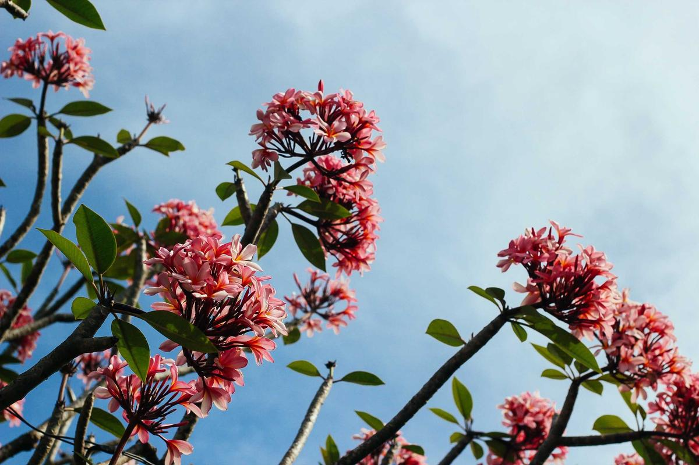

[HANTTE : 한때]
즐거운 한때를
지도 위에 남겨요.
오늘 지나온 길이 지도 위에 선으로 남고, 그 길 어딘가에서 찍은 사진은 찍은 자리에 가만히 놓여요. 여행한 날들은 하나로 묶어 두었다가, 생각날 때 다시 꺼내 보세요.

- 한때 명사
- 어느 한 시기.
- 즐거운 한때를 보내다.
천천히 내려 보세요. 길이 따라 그려져요. 이 페이지도 예시로 만든 한때 하나예요.
지나온 길이
그대로 남아요
앱을 켜 두지 않아도 괜찮아요. 주머니에 넣고 다니기만 하면 오늘 지나온 길이 지도 위에 이어지고, 사진은 찍은 그 자리에 놓여요.
문득 떠오른 말은 한마디로 남겨 두세요. 이모지 하나, 짧은 글 한 줄이면 충분해요.
- 실선이 길로 갔어요
- 점선이 근처를 지났어요
- 성긴 점여기는 한때도 몰라요
기록이 끊긴 길을 그럴듯하게 이어 붙이지 않아요. 모르는 길은 모른다고 그려요.
화면 예시예요. 실제 앱은 Apple 지도 위에 그려요.
지나온 날들이
한 장에 담겨요
사진 앱처럼 하루하루 넘겨 보다가 손가락을 오므려 보세요. 사진이 점점 작아지더니, 어느새 한 해가 한 장에 모여요.
마음에 남는 날들을 골라 그 자리에서 한때로 묶을 수 있어요.
여행한 날들을
다시 걸어 봐요
멀리 다녀온 날, 유난히 사진을 많이 찍은 날을 찾아서 이 날들, 한때로 남길까요?
하고 살며시 물어봐요. 남기기를 눌러야 한때가 돼요. 마음대로 만들어 두지 않아요.
남겨 둔 한때는 리플레이로 다시 만나요. 그날의 길을 따라가다 보면, 들렀던 곳마다 그때 찍은 사진이 하나씩 떠올라요.
캡처가 아니에요. 이 페이지에서 실제로 움직여요. 재생을 누르거나 막대를 끌어 보세요. 사진과 지명은 예시예요.
세워 두면
액자가 돼요
한때의 사진을 한 장씩, 천천히 넘겨 드려요. 사진 곁에는 찍은 곳의 작은 지도와 그때의 시간, 남겨 둔 한마디가 함께 떠요.
켜 둔 동안에는 화면이 꺼지지 않아요. 충전기에 세워 두고 오래 바라보세요.
일요일 저녁,
한 주를 돌아봐요
이번 주엔 얼마나 걸었는지, 어디에 들렀는지, 가장 오래 머문 곳은 어디였는지. 그 주에 찍은 사진 몇 장과 함께 보여 드려요. 몇 해 전 이맘때의 사진도 같이 꺼내 와요.
받겠다고 하신 분께만, 일요일 저녁 9시에 알림 한 번으로 알려 드려요.
- 걸음
- 58,214
- 들른 곳
- 17곳
- 가장 오래 있던 곳
- 바닷가 찻집
집과 회사에서는
쉬어 가요
늘 머무는 곳을 내 장소로 등록해 두면, 그 안에 있는 동안에는 위치를 재지 않아요. 하루의 대부분을 쉬는 셈이라 배터리도 덜 닳아요. 문밖을 나서면 그때부터 다시 길을 이어요.
여행처럼 길을 촘촘히 남기고 싶은 날에는 여행 기록을 켜 보세요. 그날 자정이 되면 알아서 꺼지고, 배터리가 얼마 남지 않으면 스스로 멈춰요. 켜는 건 언제나 내 손으로 해요.
어디를 다녔는지는
나만 알아요.
기록은 내 아이폰과 내 iCloud에만 남아요. 한때에는 서버가 없어서, 만든 사람도 들여다볼 방법이 없어요.
계정도, 로그인도, 광고도 없어요. 분석 도구도 넣지 않았어요.
담겨 있는 기능
오늘
- 지나온 길 자동 기록
- 사진 · 한마디를 찍은 자리에
- 걸음 · 거리 · 들른 곳
- 지도 3D · 위성 사진
날들
- 날짜별 사진 3 · 5 · 15 · 31열
- 달력으로 바로 가기
- 하루 요약 지도
- 위치 없는 사진에 위치 넣기
한때
- 직접 만들기 · 추천 받기
- 리플레이
- 액자
- 포스터 공유 4가지
- 검색
알림
- 한 주 정리 일요일 저녁
- 다녀온 뒤 한때 권하기
- 여행 기록 실시간 현황
기록
- 내 장소 집 · 회사
- 여행 기록
- 건강 앱 걸음 수 연동
- iCloud 동기화
- 내보내기 · 가져오기
꾸밈
- 라이트 · 다크 · 자동
- 길 위의 캐릭터
- 나뭇잎 · 민들레 · 단풍 효과
곧 App Store에서
만나요
지금은 출시 전 마지막 점검을 하고 있어요. iOS 26 이상이 설치된 iPhone에서 쓸 수 있고, iPad와 Mac은 그다음에 준비할게요.
자주 묻는 질문
배터리가 많이 닳지 않나요?
집이나 회사처럼 등록해 둔 내 장소 안에서는 위치를 재지 않아요. 밖에서도 평소에는 전력을 적게 쓰는 방식으로 큰 이동만 남겨요.
길을 촘촘하게 남기는 여행 기록은 직접 켰을 때만 동작하고, 그날 자정에 꺼져요.
위치 권한을 왜 항상 허용
으로 해야 하나요?
앱을 닫아 둔 동안에도 길을 이으려면 필요해요. 앱을 사용하는 동안
만 허용해도 쓸 수 있지만, 그때는 앱을 켜 둔 동안의 길만 남아요.
내 위치 기록을 다른 사람이 볼 수 있나요?
아니요. 기록은 내 아이폰과 내 iCloud에만 저장되고, 개발자를 포함해 누구에게도 보내지 않아요. 직접 포스터를 만들어 공유할 때만 밖으로 나가고, 그때도 집과 회사 근처의 길은 가려져요.
사진을 따로 올리거나 옮겨야 하나요?
아니요. 사진 앱에 있는 사진을 그대로 읽어서 보여 드려요. 사진을 복사해 두지 않고, 직접 위치를 넣거나 지우지 않는 한 사진을 바꾸지도 않아요.
앱을 깔기 전의 날들도 볼 수 있나요?
사진은 볼 수 있어요. 위치가 담긴 사진이라면 찍은 자리에 놓이고, 그 사진들로 지난 여행을 한때로 묶을 수도 있어요. 지나온 길은 앱을 쓰기 시작한 날부터 남아요.